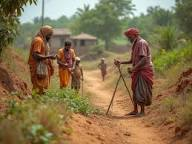

Gallery
This Is What Change Looks Like
Field photos should carry district, date, and program captions so donors can see real activity, not generic imagery.





Program video coming from CBN Trust field documentation
Donor and volunteer story video area